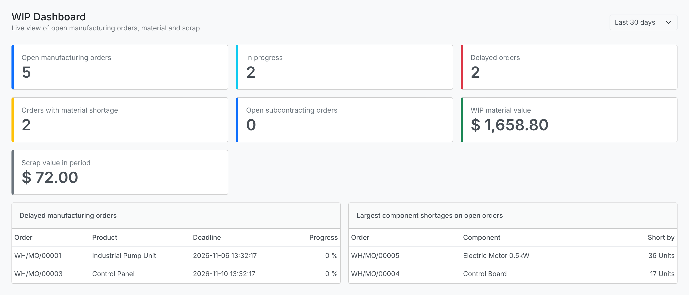
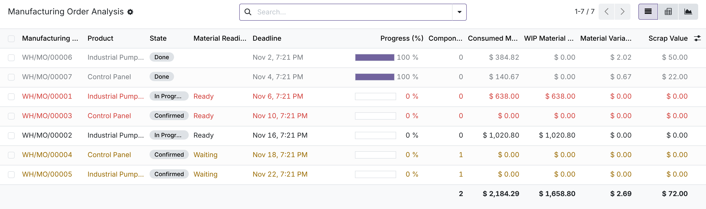
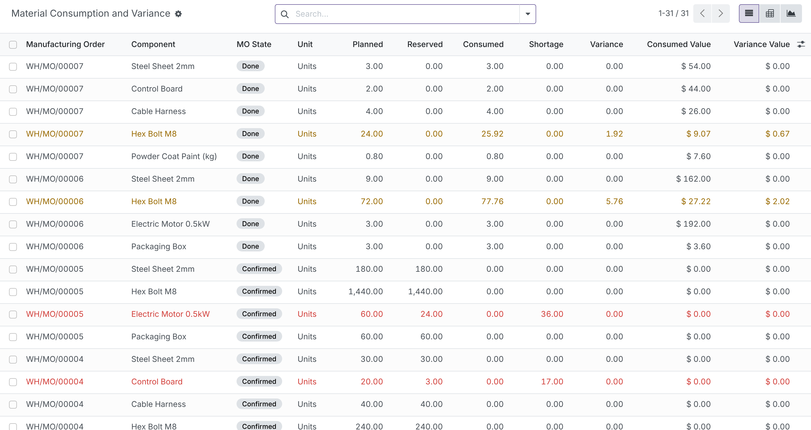
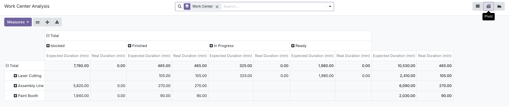

AXSync | Odoo 17.0 | Manufacturing
Track work in progress, material consumption, production delays, scrap, and component shortages from one centralized Odoo dashboard.
Value in one line: a read-only reporting layer on top of standard Odoo Manufacturing. It does not change how you manufacture. It shows you what is happening.
Odoo 17.0 Community Requires only Manufacturing (mrp) No extra Python libraries

The WIP Dashboard, captured from the module running on Odoo 17.0 with sample data.
Standard Odoo records every manufacturing order, component move and scrap. Answering simple operational questions still means opening many records or exporting to a spreadsheet.
Open orders, their state and their deadlines live on separate screens.
Planned and consumed quantities sit on different lines of each order.
Variance usually ends up in a spreadsheet maintained by hand.
A short component is often noticed only when the line stops.
Orders past their deadline are not easy to list and rank.
Subcontracting orders are mixed in with in-house production.
There is no single place showing the material value tied up in open orders.
The module adds a WIP Tracker menu under Manufacturing > Reporting. Each report reads live data from your existing orders, component moves, work orders and scrap records. Nothing is copied, nothing is duplicated.
Manufacturing Orders → Material Tracking → Production Progress → Scrap & Variance → WIP Dashboard → Reports
| Problem | How the module addresses it |
|---|---|
| No central view | One dashboard with KPI tiles for open, in progress, delayed and short orders. |
| Actual consumption | Per-component planned, reserved and consumed quantities and values. |
| Planned versus actual | Variance quantity and value on every finished component line. |
| Material shortages | Planned quantity minus reserved or consumed quantity, flagged on open orders. |
| Delayed orders | Open orders past their deadline are flagged, filtered and listed on the dashboard. |
| Subcontracting | Flags subcontracting orders and shows the subcontractor when the Subcontracting app is installed. |
| WIP reporting | Consumed material value on open orders, valued at standard cost. |
A dashboard with six KPI tiles: open orders, orders in progress, delayed orders, orders with a material shortage, WIP material value and scrap value for a period you choose (7, 30, 90 days, 12 months or all time). A seventh tile counts open subcontracting orders when the Subcontracting app is installed. Every tile opens the matching list for drill-down. Two lists show the delayed orders and the largest component shortages, and each row opens the manufacturing order. The figures are computed when the dashboard loads.
One row per manufacturing order with state, material readiness, deadline, progress, work orders completed, components short, planned, consumed, WIP and variance values, and scrap value. Progress is the produced quantity divided by the quantity to produce. Available as list, pivot and graph.
One row per component line. Quantities are split into planned, reserved and consumed. A line counts as consumed once it is picked or done, which follows the standard Odoo 17 behaviour. All quantities are expressed in the product's own unit of measure.
For finished component lines, variance is consumed minus planned, in quantity and in value. Over-consumed and under-consumed filters help you find the lines that need attention.
On open orders, a component is short when its planned quantity is not fully reserved or consumed. A dedicated Material Shortages report groups shortages by component, with the shortage value.
Validated scrap records linked to manufacturing orders, with scrapped product, quantity, date and value. Group by product, order or month.
One row per work order with work center, status, expected duration and real duration in minutes, and the duration variance on finished work orders. Pivot by work center and status.
Built into the same module, with no extra app to install. When the Subcontracting app is installed, the module flags subcontracted orders, shows the subcontractor, adds a Subcontracted filter and a Subcontractor group-by, and adds the dashboard tile. Component consumption for subcontracting orders appears in the standard component report. Stock held at the subcontractor location is not reported separately.
WIP material value is the consumed component quantity multiplied by the product's standard cost, for orders that are not yet done. It is an operational estimate. It is not an accounting valuation and it does not create journal entries.
Every report has search fields, ready-made filters, group-by options and totals. Lists and pivots use the standard Odoo export. Reports respect your multi-company access rules.
All screenshots come from the module running on Odoo 17.0 with sample manufacturing data.



The sample data in these screenshots has no subcontracting orders, so subcontracting is described in the feature list rather than pictured.
Planners and managers see open, late and blocked orders in one place.
Shortages are listed with the order and the component involved.
Planned and consumed quantities sit side by side with variance values.
Filters, group-by and drill-down replace manual searching.
The comparison is available live inside Odoo and exportable when needed.
WIP value, scrap and work center durations support day-to-day production decisions.
| Odoo version | 17.0 only |
|---|---|
| Community | Compatible. Tested on the Odoo 17.0 Community source. |
| Enterprise | Not tested. The module uses only standard Manufacturing models, but no Enterprise test run has been performed. |
| Required Odoo apps | Manufacturing (mrp). Subcontracting (mrp_subcontracting) is optional. When installed, the module also shows subcontracted orders and their subcontractors. |
| Python libraries | None beyond Odoo itself. |
| Work orders | Work center reports need work orders enabled in Manufacturing settings. |
| Multi-company | Supported through record rules. Covered by an automated test. |
| Data and services | Read-only. No external services. No data stored by the module beyond standard Odoo records. |
Yes. It depends only on the Manufacturing app and was tested on Odoo 17.0 Community.
It uses only standard Manufacturing models and is expected to work, but it has not been tested on Enterprise.
No. It adds new reporting models, views and menus. It does not change standard models or core code.
Yes. Each report is restricted to the companies the user may access.
Yes. It reports quantities picked or done on component lines, with values at standard cost, next to the planned quantities.
Yes, built in. When the Subcontracting app is installed, the module flags subcontracting orders and shows the subcontractor. It does not report stock held at the subcontractor separately.
Yes. Use the standard Odoo export on any list or pivot view.
No.
Copy the module folders into your addons path, update the Apps list, and install Manufacturing WIP Tracker. On Odoo.sh, add the repository branch. Full steps are in the README.
Email hunain@axsync.com or use the Contact the Author option on this Odoo Apps Store page.
Published by AXSync
Website: www.axsync.com
Support email: hunain@axsync.com
Email hunain@axsync.com or use the Contact the Author option on the Odoo Apps Store page. Please include your Odoo version, the module version, and what you expected to see. Screenshots help.
This module is published by AXSync and is not an official Odoo product. Odoo is a trademark of Odoo S.A.
Install AXSync Real-Time Manufacturing WIP & Material Tracker and manage production progress, material consumption and WIP from one place.
www.axsync.com